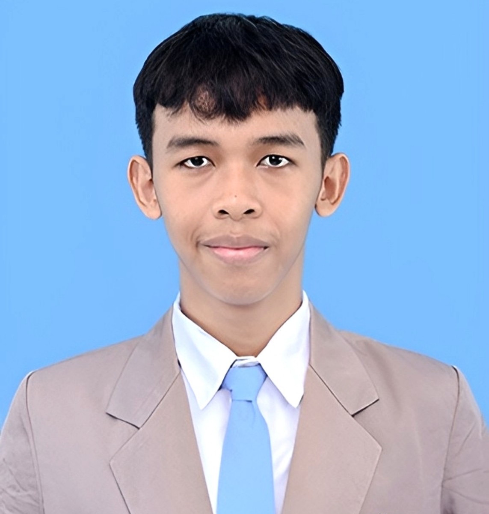
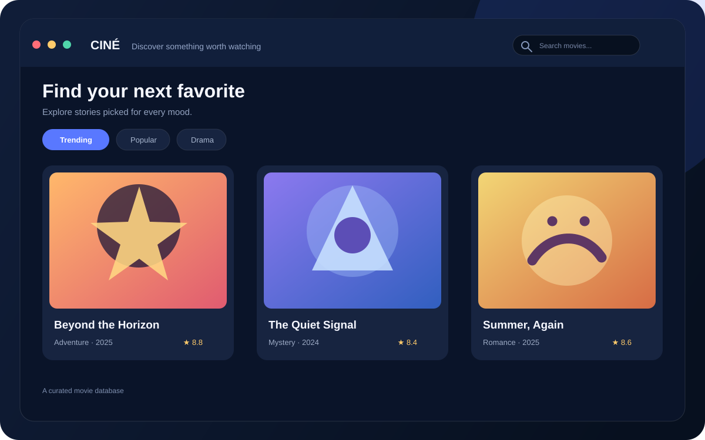
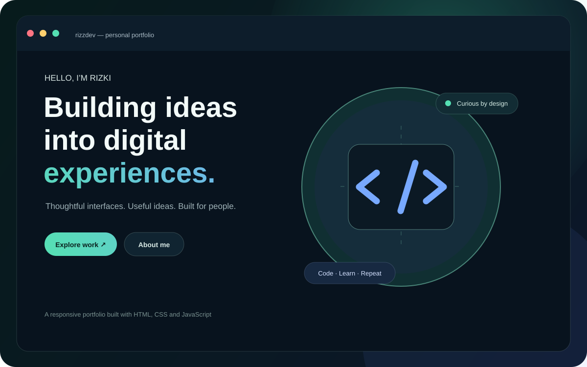
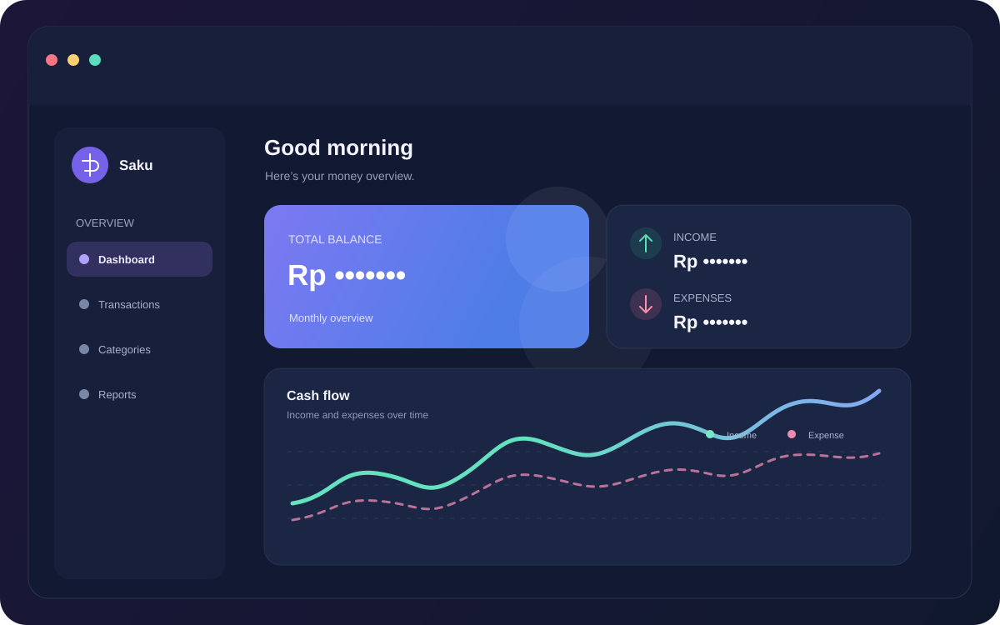

welcome to RizzDev, saya...
Rizki Afandi, Web Developer, Programmer, dan Technology Enthusiast
Saya dikenal sebagai RizzDev dan Rizqi Afandi. Saya senang membangun program dan website yang modern, rapi, serta berfokus pada pengguna, sambil terus mempelajari pemrograman dan teknologi lewat proyek personal.

Tentang Saya
Halo! Saya Rizki, siswa Rekayasa Perangkat Lunak yang senang belajar pemrograman dan mengembangkan ide menjadi sebuah proyek. Melalui RizzDev, saya membagikan karya dan proses belajar di bidang teknologi.
Saat ini saya mempraktikkan pengembangan web/aplikasi, programming, desain UI/UX, dan pemecahan masalah. Saya juga tertarik mempelajari software, sistem komputer, basis data, kecerdasan buatan, keamanan siber, dan teknologi baru sebagai bagian dari proses belajar.
Fokus utama
Mengembangkan program, website, atau aplikasi dengan struktur yang jelas dan berorientasi pada pengguna.
Tujuan
Terus belajar sambil membangun karya digital yang elegan, cepat, dan bermanfaat.
Keahlian
Pilih teknologi atau tools untuk melihat penjelasan singkatnya.
HTML
CSS
JavaScript
Rust
Postman
PostgreSQL
REST API
MySQL
Supabase
Node.js
Python
PHP
Proyek Terpilih
Pilihan karya dari proses belajar, eksplorasi, dan praktik teknologi.

Movie Database App
Katalog film dengan fitur pencarian, filter, halaman detail, serta pilihan tema gelap dan terang.


Money Tracker
Aplikasi pelacakan pengeluaran dan pemasukan dengan fitur grafik dan laporan bulanan.
Layanan & FAQ
Mari Berdiskusi
Saya terbuka untuk proyek, diskusi ide, maupun kesempatan kolaborasi. Jika Anda ingin aplikasi/website yang modern dan fungsional, jangan ragu menghubungi saya.